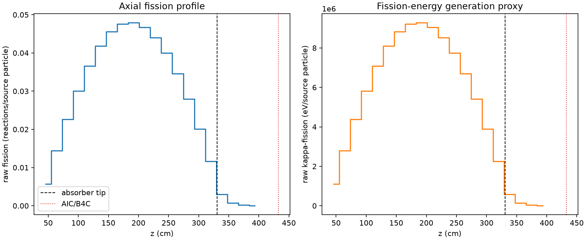
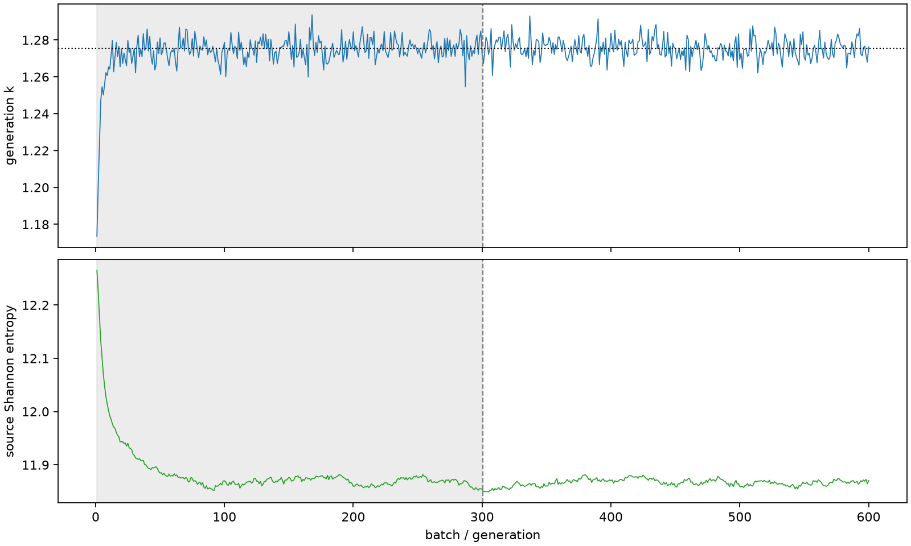

| field | value |
|---|---|
| experiment | V2-STAGE_256_OGRENCI_04-0008 |
| k | 1.275498985918844 |
| MC standard error | 0.0001948965951884021 |
| seconds | 987.4845861840004 |
| acceptance | not_assessed |
| convergence | review_required |
Completed is output integrity only; physical and statistical review required. Zero tallies do not prove zero production or zero uncertainty.
| diagnostic | value |
|---|---|
| geometric fuel voxels | 5280 |
| zero fission tally voxels | 0 |
| low signal fuel voxels | 266 |
| low signal fission share | 6.655909819607417e-05 |
| low signal kappa share | 6.658184862091759e-05 |
| important fission share | 0.9500667647468164 |
| previous filter included | 5014 |
| duration estimate s | 1562.5173488400023 |
| actual minus estimate s | -575.032762656002 |
| fission relative MC error | statistics |
|---|---|
| all_geometric_fuel | {"voxels": 5280, "positive_mean_voxels": 5280, "zero_mean_voxels": 0, "undefined_relative_error_voxels": 0, "median": 0.01065408012809781, "p95": 0.20422866717187135, "maximum": 0.4510636849378993} |
| low_signal | {"voxels": 266, "positive_mean_voxels": 266, "zero_mean_voxels": 0, "undefined_relative_error_voxels": 0, "median": 0.27426737627696485, "p95": 0.36824487161328856, "maximum": 0.4510636849378993} |
| important_95pct | {"voxels": 3604, "positive_mean_voxels": 3604, "zero_mean_voxels": 0, "undefined_relative_error_voxels": 0, "median": 0.009234485879268488, "p95": 0.013913000446647235, "maximum": 0.01686726993957427} |
| outside_previous_filter | {"voxels": 266, "positive_mean_voxels": 266, "zero_mean_voxels": 0, "undefined_relative_error_voxels": 0, "median": 0.27426737627696485, "p95": 0.36824487161328856, "maximum": 0.4510636849378993} |
| kappa_fission relative MC error | statistics |
|---|---|
| all_geometric_fuel | {"voxels": 5280, "positive_mean_voxels": 5280, "zero_mean_voxels": 0, "undefined_relative_error_voxels": 0, "median": 0.01064267732053268, "p95": 0.20387188549112661, "maximum": 0.4498018869223538} |
| low_signal | {"voxels": 266, "positive_mean_voxels": 266, "zero_mean_voxels": 0, "undefined_relative_error_voxels": 0, "median": 0.2738555107976607, "p95": 0.36781473718724655, "maximum": 0.4498018869223538} |
| important_95pct | {"voxels": 3604, "positive_mean_voxels": 3604, "zero_mean_voxels": 0, "undefined_relative_error_voxels": 0, "median": 0.009225092156983297, "p95": 0.013897475506463655, "maximum": 0.016850652303031642} |
| outside_previous_filter | {"voxels": 266, "positive_mean_voxels": 266, "zero_mean_voxels": 0, "undefined_relative_error_voxels": 0, "median": 0.2738555107976607, "p95": 0.36781473718724655, "maximum": 0.4498018869223538} |
| axial bin | fission share | kappa-fission share |
|---|---|---|
| 1 | 0.010915955590319945 | 0.010916463589032302 |
| 2 | 0.027690947986384003 | 0.027690930933225513 |
| 3 | 0.043369586556405354 | 0.04336938919155057 |
| 4 | 0.057718048887239554 | 0.05771784687662748 |
| 5 | 0.07019857401058015 | 0.07019830148226235 |
| 6 | 0.08032845794298182 | 0.08032829556919369 |
| 7 | 0.08752009064900826 | 0.08752011070698165 |
| 8 | 0.0913196505995866 | 0.09131939168067954 |
| 9 | 0.0919106981891024 | 0.09191039173363241 |
| 10 | 0.08962458304207531 | 0.08962426428333457 |
| 11 | 0.08437964477060411 | 0.08437941475186371 |
| 12 | 0.0766799862502397 | 0.07667984663556546 |
| 13 | 0.06635184894596054 | 0.06635175092814387 |
| 14 | 0.053652799545758224 | 0.053652600297363996 |
| 15 | 0.03858347594471601 | 0.03858342023997589 |
| 16 | 0.02224630400257227 | 0.022246353753789506 |
| 17 | 0.005802812792185026 | 0.005804179764160281 |
| 18 | 0.0013283531189130348 | 0.0013287484922521577 |
| 19 | 0.00031361224902147863 | 0.00031370845688873344 |
| 20 | 6.456892634630217e-05 | 6.45906334764094e-05 |
Histories include the inactive-to-active transition at batch 300. kappa-fission approximates fission energy production, not total heat deposition.

